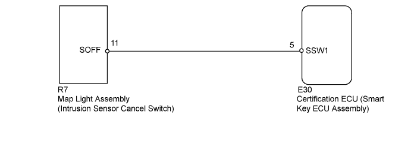
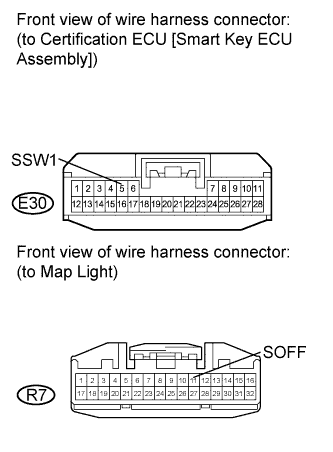

THEFT DETERRENT SYSTEM > Intrusion Sensor Cancel Switch Circuit |

| 1.READ VALUE USING INTELLIGENT TESTER (INTRUSION SENSOR CANCEL SWITCH) |
Using the intelligent tester, read the Data List.
| Tester Display | Measurement Item / Display (Range) | Normal Condition | Diagnostic Note |
| Intrusion sensor OFF | Intrusion sensor cancel switch / ON or OFF | ON: Intrusion sensor active (switch off) OFF: Intrusion sensor not active (switch on) | - |
|
| ||||
| OK | ||
| ||
| 2.CHECK HARNESS AND CONNECTOR (CERTIFICATION ECU [SMART KEY ECU ASSEMBLY] - MAP LIGHT ASSEMBLY) |
 |
Disconnect the E30 ECU connector.
Disconnect the R7 light connector.
Measure the resistance according to the value(s) in the table below.
| Tester Connection | Condition | Specified Condition |
| E30-5 (SSW1) - R7-11 (SOFF) | Always | Below 1 Ω |
| E30-5 (SSW1) or R7-11 (SOFF) - Body ground | Always | 10 kΩ or higher |
|
| ||||
| OK | |
| 3.CHECK MAP LIGHT ASSEMBLY (INTRUSION SENSOR CANCEL SWITCH [OPERATION]) |
Temporarily replace the map light assembly (intrusion sensor cancel switch) with a new or normally functioning one (Click here).
Turn the intrusion sensor off by pressing the intrusion sensor cancel switch. Check if the switch operates normally by checking that the theft deterrent system does not operate when you move your hand in front of the sensor.
|
| ||||
| OK | ||
| ||